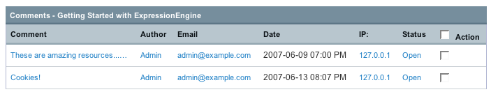

Comment Editing Page
The Comment Editing Page, as the name suggests, allows you to view and edit comments for a given entry.

Clicking the comment text allows you to edit the comment.
Clicking the IP Address will show you all other comments that share the same IP.
You may select multiple rows using the checkboxes on the right, then open, close, or delete them. An open comment is live on your site, a closed comment will not be shown on your site.
This page contains "magic checkbox" code, allowing you to click anywhere on row to select a checkbox. You can shift-select multiple rows.